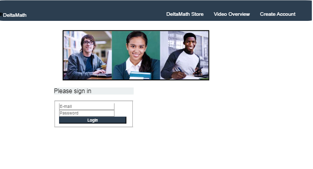

My teacher assigned a project about recreating certain websites, or your own. The selection included websites like Pupilpath, Pencil, and DeltaMath. I felt that DeltaMath would be interesting to create, since it looked pretty simple, and I was interested in creating a button, the sign in box, and the links on the site. The links magically change color when you hover over them, so that part was especially fun to recreate.
A challenging part of this project was figuring out the sign in box. I got it to work by making forms and looking up how to make a button in CSS, as well as getting some assistance from my coding friend.
If you compare my website to the real DeltaMath site, you'll find a few differences... For one, my sign-in box is not as polished as the real site! It still would have the same functionality if I didn't have dead links, though. The font is a bit off, and also you can see that the top column is thicker than the original. Next time, I want to make my site responsive to screen sizes, and figure out some padding to make the sign in box look more realistic.
Other than that, I'm quite proud of the progress I've made; I learned a lot about what goes into a website, and am fairly confident that I could recreate another website if I had more time!
Link to the projectA little peek into my fake website!
